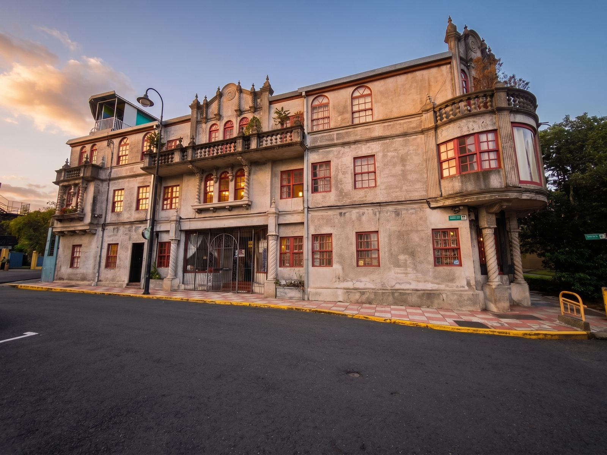
EN ALQUILER · PROPIEDAD # 10388690
Encantador apartamento en edificio histórico
Barrio Otoya, San José · Primer piso
₡400.000 / mes
Ref. JMK-OTOYA-HIST-001-alquiler
Datos principales
Alquiler₡400.000 por mes
Depósito₡400.000
Dormitorios1
NivelPrimer piso
Sala y comedorPisos de madera
CocinaÁrea de cocina
LavanderíaÁrea de lavado
ExtrasBodega y patio
EdificioHistórico
Propiedad# 10388690
Descripción
Ubicado en el céntrico y exclusivo Barrio Otoya, este hermoso apartamento en primer piso combina detalles clásicos con una excelente iluminación natural. Un espacio claro y lleno de historia.
Cuenta con 1 dormitorio, sala y comedor con hermosos pisos de madera, área de cocina, área de lavado, bodega y un hermoso patio.
Alquiler de ₡400.000 mensuales con depósito de ₡400.000.
Galería
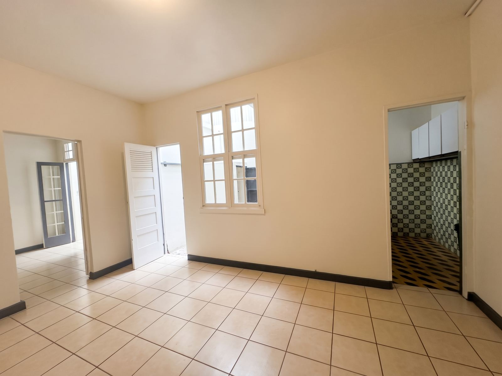
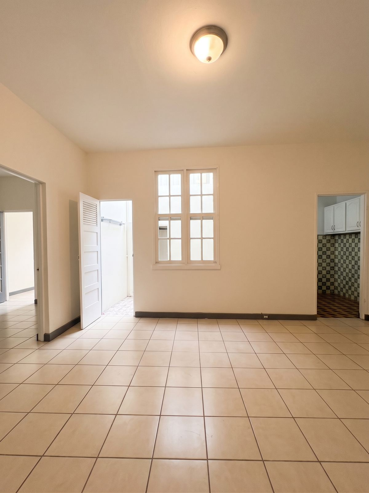
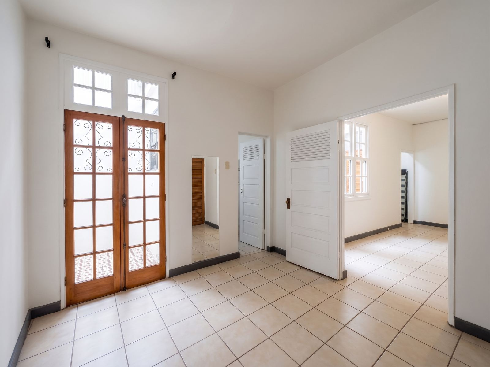
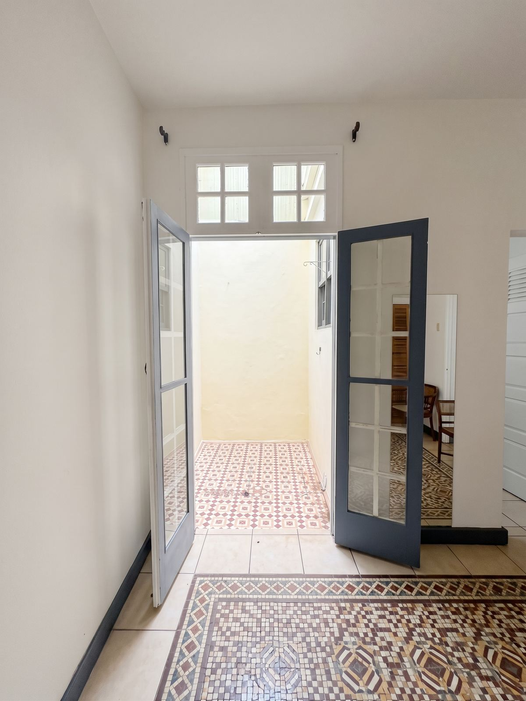
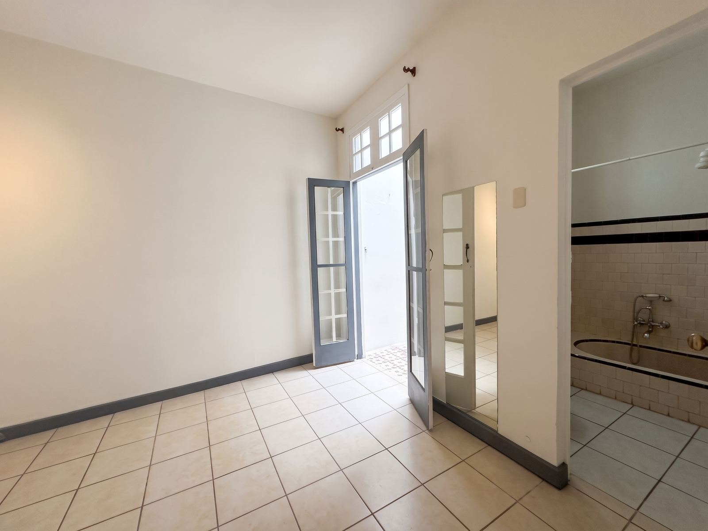
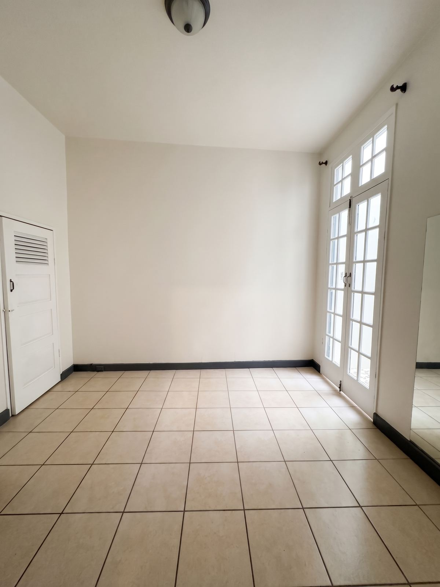
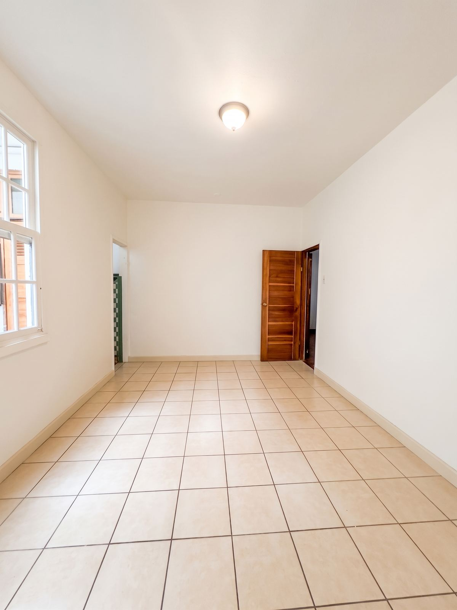
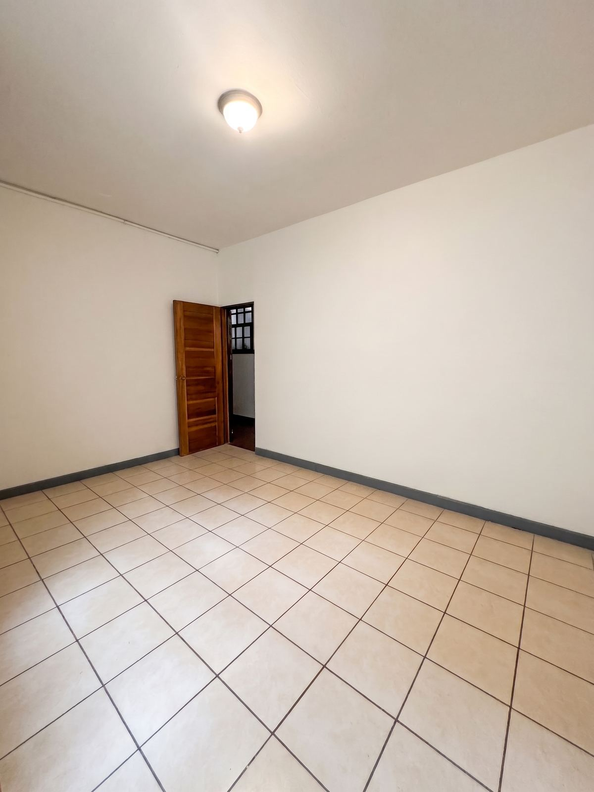
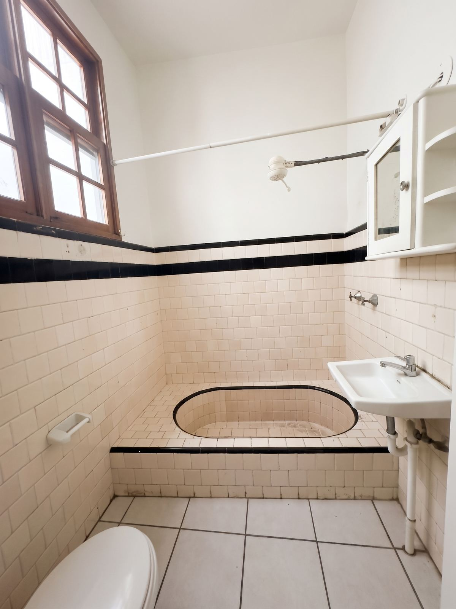
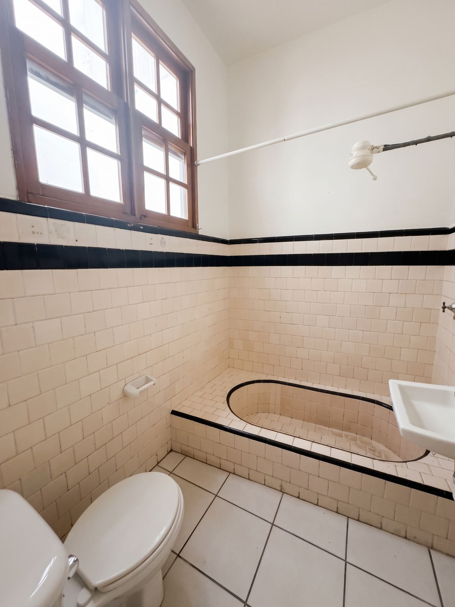
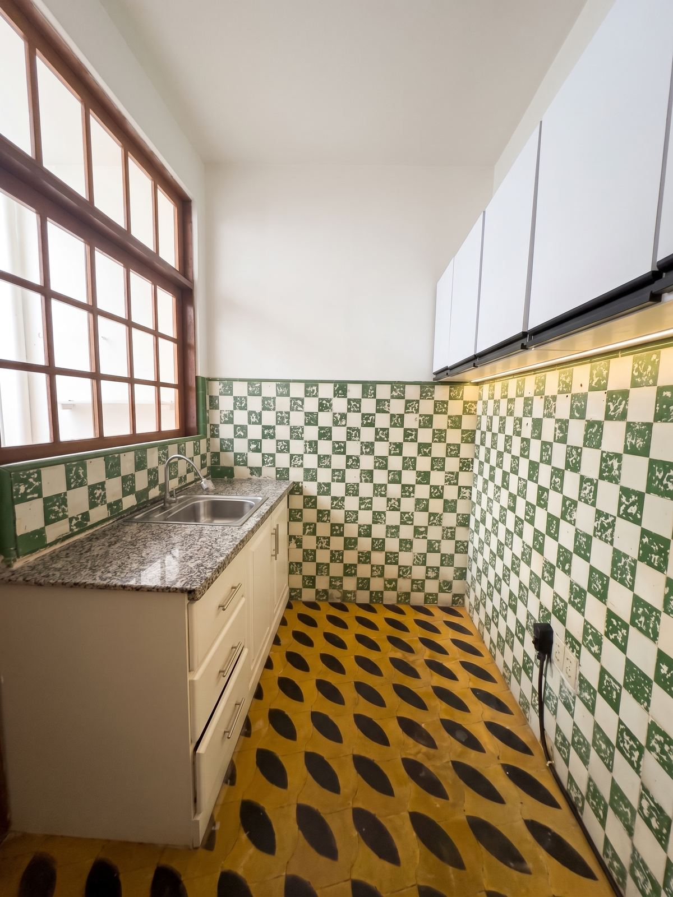
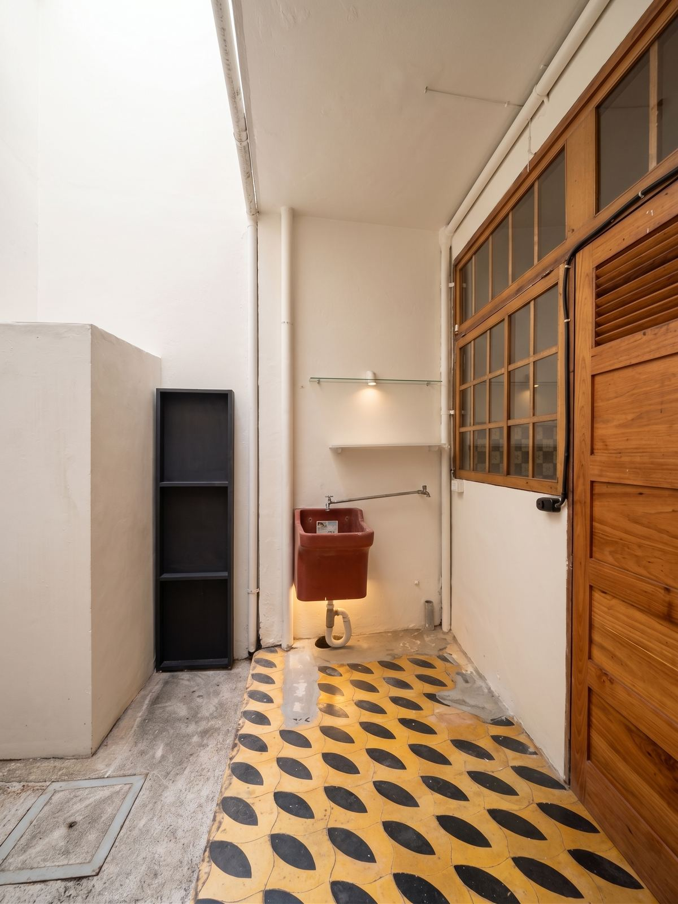
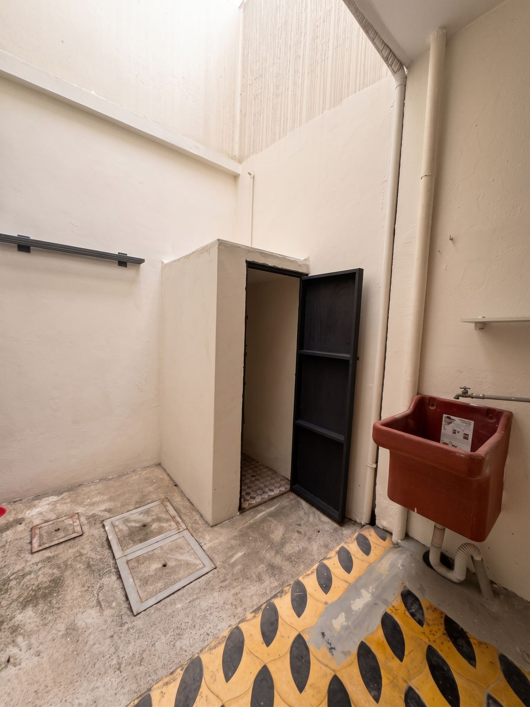
Contáctanos hoy mismo para agendar tu visita
Teléfono y WhatsApp: +506 6019-0789
www.inmobiliariajmk.com · info@realestatejmk.com
Redes: linktr.ee/inmobiliariajmk
Airbnb: airbnb.co.cr/p/realestatejmk
Canal de WhatsApp: whatsapp.com/channel/0029Vb5yLf2JJhzUstXwyl2Z
Teléfono y WhatsApp: +506 6019-0789
www.inmobiliariajmk.com · info@realestatejmk.com
Redes: linktr.ee/inmobiliariajmk
Airbnb: airbnb.co.cr/p/realestatejmk
Canal de WhatsApp: whatsapp.com/channel/0029Vb5yLf2JJhzUstXwyl2Z
Inmobiliaria JMK® · Servicios Inmobiliarios Real Estate JMK S.R.L.